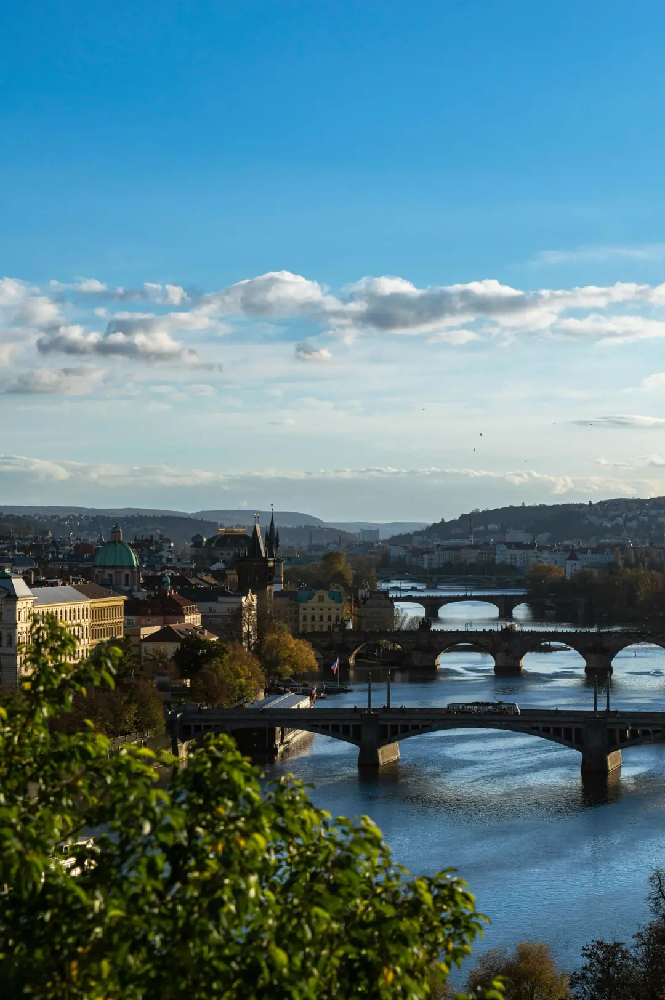
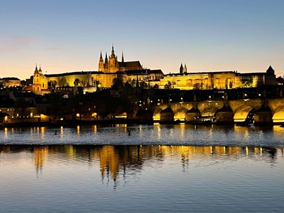

Karlsbrücke und Prager Burg mit einer Stadtführerin erleben
Zwei Orte, die fast jeder Prag-Besucher sehen will. Mit einer zertifizierten Expertin sehen Sie dabei mehr als die Fotomotive.

Was eine private Führung anders macht
Eine Gruppe folgt meist einer Fahne und hört einen Satz pro Station. Bei einer privaten Tour bestimmen Sie das Tempo und die Fragen. Ich habe vierzig Jahre Erfahrung darin, Prag so zu erklären, dass es hängen bleibt.
- 1986
Seit diesem Jahr führe ich Gäste durch Prag.
- Zertifiziert
Offizielle tschechische Stadtführer-Zertifizierung und Akkreditierung des Jüdischen Museums.
- 4,9 / 5
Bewertung auf TripAdvisor aus 14 Bewertungen.

Die Brücke erzählt mehr als ihre Fotos
Der Bau der Karlsbrücke begann 1357 unter Karl IV. Sie ersetzte die Judithbrücke, die 1342 bei einem Hochwasser zerstört worden war. Auf ihr stehen 30 Heiligenstatuen, die meisten aus dem Barock.
Ich zeige Ihnen, welche Figur welche Geschichte trägt, und erkläre die beiden Brückentürme. Die Kampa-Seite unter den Bögen zeige ich Ihnen auch, wenn Sie fotografieren möchten.
(noch zu ergänzen)
Höfe, Dom und das Goldene Gässchen
Die Prager Burg ist einer der größten zusammenhängenden Burgkomplexe der Welt. Sie war über Jahrhunderte Sitz böhmischer Könige und beherbergt heute den Amtssitz des tschechischen Präsidenten.
Wir besuchen den Veitsdom mit der Wenzelskapelle und gehen durch das Goldene Gässchen, dessen kleine Häuser im späten 16. Jahrhundert entstanden.
Man überquert die Karlsbrücke Richtung Kleinseite und steigt dann durch die Gassen bergauf. Die Nerudova-Straße führt zum Burgviertel hinauf. Der Anstieg ist moderat, der Weg führt über Kopfsteinpflaster. Mit Fotostopps und Erklärungen sollten Sie mehr Zeit einplanen.
Tipp: Die Burg passt gut an den Vormittag. Die Brücke ist am späten Nachmittag und in der blauen Stunde besonders eindrucksvoll.
„Zuzanas persönliche Geschichte mit der Stadt macht diese Führung zu etwas völlig Einzigartigem. Absolut unvergesslich.“
Häufige Fragen
Wird die Tour auf Deutsch gehalten?
Ja. Die Tour findet auf Deutsch statt und ist auf Ihre Fragen abgestimmt.
Lassen sich beide Orte an einem Tag besuchen?
Ja. Ich plane die Reihenfolge nach Ihrer Zeit, Ihrem Tempo und dem Licht.
Sind Eintrittskarten enthalten?
Nein. Wir klären vorab, welche Eintrittskarten sich für Ihre Zeit lohnen.
Kann ich die Route anpassen?
Ja. Sie sagen mir, was Sie interessiert, und wir planen den Rundgang gemeinsam.
Planen wir Ihren Tag in Prag
Schreiben Sie mir Ihren Reisetermin und Ihre Wünsche. Ich melde mich mit einem Vorschlag für Ihre Route.
Private Stadtführung Prag